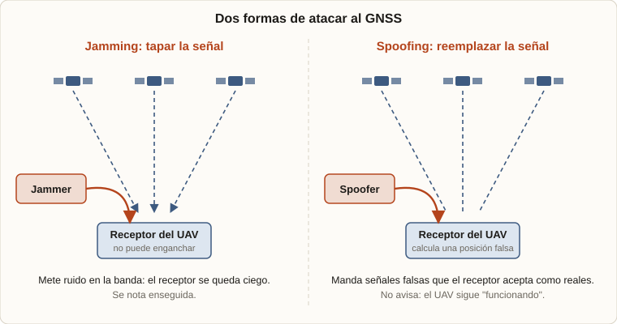
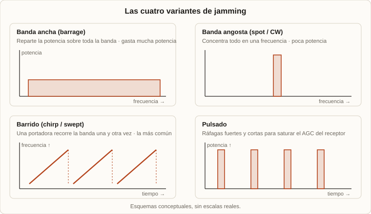
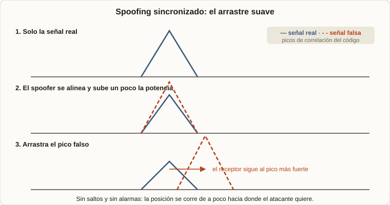

2026 · Seguridad aérea · GNSS · UAV
Guerra electrónica en drones: cómo se tapa y se engaña al GPS
Este año me metí en un tema que me gustó mucho: la seguridad aérea. Estudié las normativas, cómo funcionan las aeronaves y qué las puede hacer fallar. Dentro de todo eso, lo que más me atrapó fue la guerra electrónica aplicada a los drones, y en particular dos ataques sobre las señales de navegación satelital: el jamming y el spoofing. Con Ramiro Palomeque armamos un informe, y esta es la versión resumida.
1. La idea central
2. Una señal que llega más baja que el ruido
3. Jamming: tapar la señal
4. Spoofing: reemplazar la señal
5. Cómo se defienden
6. Qué dice la ley
7. Lo que existe hoy
8. Qué me llevé
1. La idea central
Casi todo dron moderno depende del GNSS (el nombre general de los sistemas de navegación satelital: GPS de EE. UU., GLONASS de Rusia, Galileo de la Unión Europea y BeiDou de China) para saber dónde está. El controlador de vuelo funde esos datos con los de la IMU, el barómetro y el magnetómetro, normalmente con un filtro de Kalman, y de ahí salen funciones como mantener la posición, seguir un recorrido o volver al punto de despegue. El GNSS también corrige la deriva de la navegación inercial, que sola se va acumulando error.
Esa dependencia es a la vez su gran fortaleza y su punto débil. Hay dos maneras de atacarla:

El jamming es evidente: el dron se queda sin GPS y lo sabe. El spoofing es más insidioso, porque el receptor sigue entregando una posición aparentemente válida, pero falsa. En un jamming se pierde disponibilidad; en un spoofing se compromete la integridad de la información.
2. Una señal que llega más baja que el ruido
La clave de todo está en que la señal de un satélite llega a la Tierra extremadamente débil: unos −155 a −160 dBW, por debajo del ruido térmico de fondo. Si el receptor logra rescatarla es porque usa espectro ensanchado: cada satélite transmite un código pseudoaleatorio (PRN) conocido, y el receptor lo correlaciona con una réplica local. Eso concentra la energía de la señal útil y dispersa cualquier interferencia, y da una ganancia de procesamiento de unos 43 dB en el código civil C/A del GPS.
Como un satélite está a unos 20.000 km, una señal tan tenue se vence con un transmisor chico y cercano. De ahí que ambos ataques sean posibles con equipos accesibles. Para que el receptor calcule su posición necesita ver al menos cuatro satélites: tres incógnitas espaciales y una cuarta para sincronizar su reloj.
3. Jamming: tapar la señal
El jamming consiste en inyectar energía en la banda GNSS (la banda L, entre 1 y 2 GHz, con GPS L1 en 1575,42 MHz) hasta que la relación señal-ruido del receptor cae por debajo del mínimo para seguir a los satélites. Los lazos de seguimiento pierden el enganche y el receptor deja de calcular posición.

| Variante | Cómo es | Qué la frena |
|---|---|---|
| Banda ancha (barrage) | Ruido sobre toda la banda. Gasta mucha potencia. Es el jammer de "fuerza bruta". | Antena CRPA |
| Banda angosta (spot / CW) | Toda la potencia en una frecuencia. Muy eficiente. | Filtros de muesca adaptativos |
| Barrido (chirp) | Una portadora que recorre la banda repetidamente. Es la más común en los jammers baratos del mercado negro. | Excisión en tiempo y frecuencia, CRPA |
| Pulsado | Ráfagas fuertes y cortas, para saturar el control automático de ganancia (AGC) del receptor. | Blanking (recorte temporal) |
Lo que le pasa al dron: usa la navegación inercial para seguir un rato, pero su precisión decae porque los errores se acumulan. Por eso los drones modernos tienen procedimientos ante la pérdida de GPS: mantener posición con otros sensores, volver a una zona segura o aterrizar. Los más avanzados navegan con odometría visual (estimar el movimiento mirando cómo se mueven los píxeles entre imágenes) o SLAM (construir un mapa y ubicarse dentro de él al mismo tiempo).
4. Spoofing: reemplazar la señal
El spoofing no tapa la señal: la sustituye. El atacante genera señales con los mismos códigos PRN, el mismo formato de mensaje y las mismas frecuencias. Son señales de radio reales; lo falso es la información que llevan. Hay tres niveles de sofisticación:
- Meaconing: capta las señales reales y las retransmite con retardo y más potencia. Es simple, y fácil de detectar por las inconsistencias de tiempo.
- Generativo: sintetiza señales completas con un simulador o una radio definida por software, y puede inventar cualquier posición y hora. Si aparece de golpe, el receptor pierde el enganche y se nota el salto.
- Sincronizado: el más peligroso. Primero alinea su señal con la real (código, fase, Doppler y potencia), de modo que el receptor no note ninguna discontinuidad. Después sube de a poco la potencia y arrastra las pseudodistancias, corriendo la posición lentamente. Es el ataque típico que desvía a un dron sin generar alarmas.

En términos de electrónica del receptor, un spoofing exitoso logra que el pico de correlación falso supere y desplace al verdadero en el lazo de seguimiento del código. Por eso los ataques bien hechos igualan primero la potencia, para no disparar el AGC, y recién después mueven la fase del código.
5. Cómo se defienden
Ninguna técnica sola alcanza: los sistemas robustos combinan capas.
Contra el jamming
- Antenas CRPA (patrón de recepción controlado): un arreglo de antenas que genera "nulos", zonas de ganancia casi cero, hacia donde viene el interferente. Un arreglo de N elementos puede anular hasta N−1 fuentes a la vez. Es la defensa más efectiva, porque actúa por dirección y no por frecuencia, pero es cara, pesada y consume, y por eso queda para drones de gama alta y militares.
- Filtros de muesca adaptativos y excisión en tiempo (recortar los picos de un jamming pulsado) o en frecuencia.
- Receptores multiconstelación y multifrecuencia: obligan al atacante a interferir varias frecuencias a la vez.
- Señales militares cifradas, como el código M de GPS.
Contra el spoofing
- Monitorear la señal: un salto de C/N₀ o una corrección rara del AGC pueden delatar la señal falsa.
- Ángulo de llegada: los satélites reales llegan desde direcciones distintas, pero un spoofer transmite todo desde un solo punto. Con un arreglo de antenas se detecta que "todos los satélites" parecen venir del mismo lado, algo físicamente imposible.
- Validación cruzada entre GNSS, la navegación inercial, el barómetro y la visión. Si el GNSS se desvía de lo que dicen los otros sensores, se lo descarta o se le baja el peso. Es barata y de las más usadas.
- RAIM (monitoreo de integridad del receptor), pensado para detectar fallas de un satélite pero útil para ver saltos imposibles.
- Autenticación criptográfica, la defensa de raíz. Galileo OSNMA le agrega una firma digital al mensaje de navegación del servicio abierto, y según nuestras fuentes fue declarado operativo el 24 de julio de 2025, como la primera protección criptográfica contra spoofing para usuarios civiles a escala mundial. GPS tiene el equivalente en sus señales militares cifradas, y en desarrollo el esquema Chimera para uso civil. Ni siquiera esto es infalible contra una retransmisión muy bien sincronizada, así que se combina con las demás capas.
6. Qué dice la ley
El espectro GNSS está muy protegido, porque la radionavegación tiene que ver con la seguridad de la vida humana.
- UIT: las bandas 1164–1215 MHz y 1559–1610 MHz están atribuidas a la radionavegación por satélite, con protección absoluta frente a interferencias perjudiciales. El Reglamento de Radiocomunicaciones prohíbe las señales falsas o engañosas (Art. 15.1), lo que cubre jamming y spoofing. En 2025 la UIT, la OACI y la OMI emitieron una declaración conjunta alertando del aumento de estos ataques.
- OACI: el Anexo 10 del Convenio de Chicago fija los requisitos del GNSS en términos de precisión, integridad, continuidad y disponibilidad según la fase de vuelo.
- Argentina: ENACOM administra el espectro (la radionavegación por satélite figura con categoría primaria en el CABFRA) y la Ley 27.078 lo declara recurso del dominio público del Estado. La ANAC regula los drones con la RAAC Parte 100 y la Resolución 550/2025, que reemplazó a la 880/2019.
- Quién puede usar qué: los canales abiertos (GPS L1 C/A, Galileo OS) son de uso libre. Los cifrados (GPS P(Y) y M, Galileo PRS) están reservados a usuarios estatales o militares autorizados.
El resumen: interferir o suplantar señales GNSS es ilegal. Viola tanto la atribución del espectro como las normas de seguridad aérea.
7. Lo que existe hoy
Los sistemas de protección van de lo militar a lo comercial:
| Nivel | Ejemplo | Qué ofrece |
|---|---|---|
| Alta complejidad | NovAtel GAJT-AE3 | Antena anti-jamming con CRPA: soporta interferencia desde hasta siete direcciones a la vez y hasta 65 dB de supresión. Con detección de spoofing. |
| Safran Skylight | Receptor de doble modo que procesa a la vez el código M de GPS y el PRS de Galileo. | |
| Media | Septentrio (tecnología AIM+) | Mitigación de interferencias dentro del propio receptor, sin arreglos de antenas, con detección de spoofing. |
| u-blox de doble banda (F9 / F10) | Autenticación OSNMA de Galileo y doble banda L1/L5: una opción accesible y de bajo consumo. | |
| Solo GNSS | Drones de consumo DJI (Mini / Air) | Dependen casi por completo del GNSS multiconstelación, sin antenas anti-jamming ni autenticación. Son el caso típico de los riesgos del informe. |
La tendencia es clara: capacidades que antes eran solo militares (autenticación, detección de spoofing, mitigación adaptativa) bajan a receptores civiles de menor costo, empujadas por la disponibilidad de OSNMA y por el aumento de incidentes.
8. Qué me llevé
La conclusión del informe es que ninguna defensa individual alcanza: la resiliencia sale de combinar capas (antenas CRPA, mitigación en el receptor, autenticación como OSNMA y validación cruzada con la navegación inercial y la visión). Y que una ley sólida protege el espectro, pero no frena a un atacante: la seguridad de un dron depende, en última instancia, de cómo está diseñado.
Es un tema que junta radiofrecuencia, procesamiento de señales, sistemas embebidos y la parte regulatoria que decide qué se puede y qué no.
Algunas de las fuentes
- ITU, Radio Regulations y declaración sobre protección del RNSS (2025).
- ITU / ICAO / IMO, declaración conjunta sobre interferencia en la navegación satelital (2025).
- ICAO, Anexo 10 al Convenio de Chicago, Volumen I.
- ESA Navipedia, GPS Services y GNSS Authentication and Encryption.
- EUSPA, Galileo OSNMA.
- NovAtel, GAJT; NXP AN1428.
- arXiv:2208.11555, White Paper: Protecting GNSS Against Intentional Interference.
- ENACOM, CABFRA; ANAC, nuevo marco normativo para drones (RAAC Parte 100 / Resolución 550/2025); Ley 27.078.